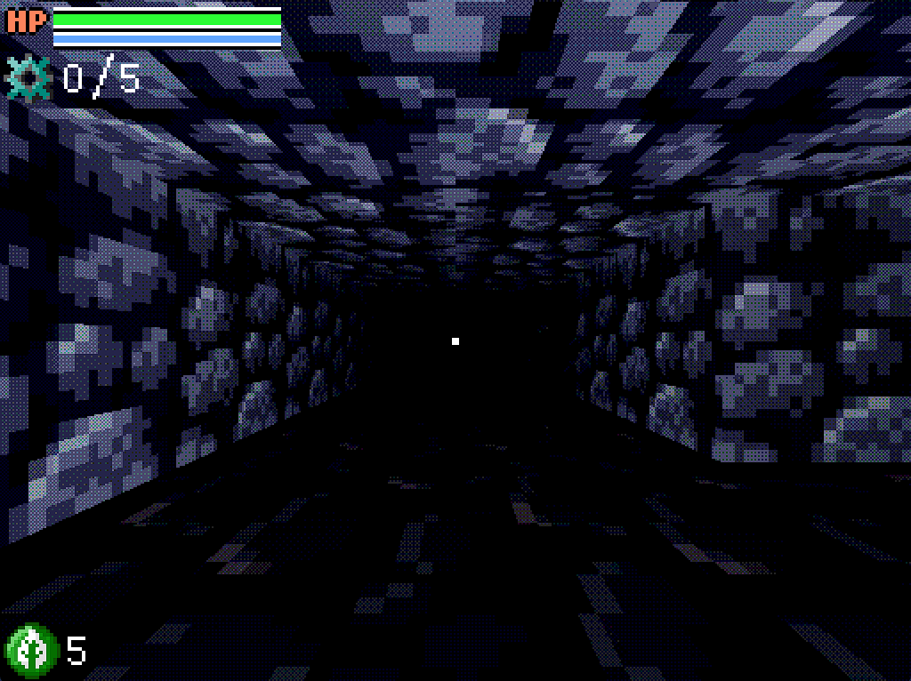

Lost in the mystery maze

**This game is outdated and very experimental. But I though it can be funny to put it here.**
Cyra decided to set off on an adventure alone to unravel the mysteries of the time gears. But weeks have passed and she has not been heard from since. Sakura, Cyra's exploration partner and best friend. Decided to investigate her disappearance and saving Cyra. Maybe...
Download:
Windows (1.1.4)Linux (1.1.4)*
* Made sure to enable permission to run the app on the .x86_64 file property